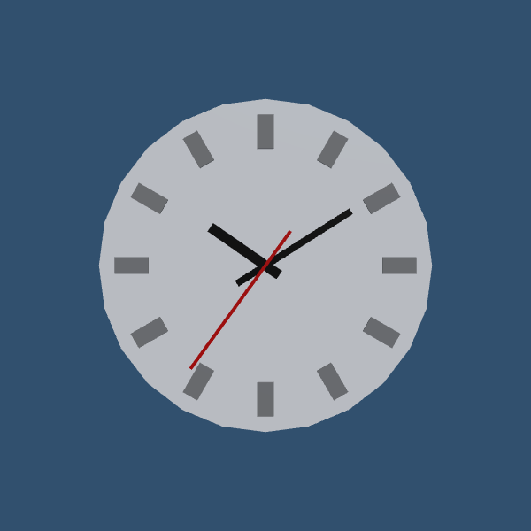
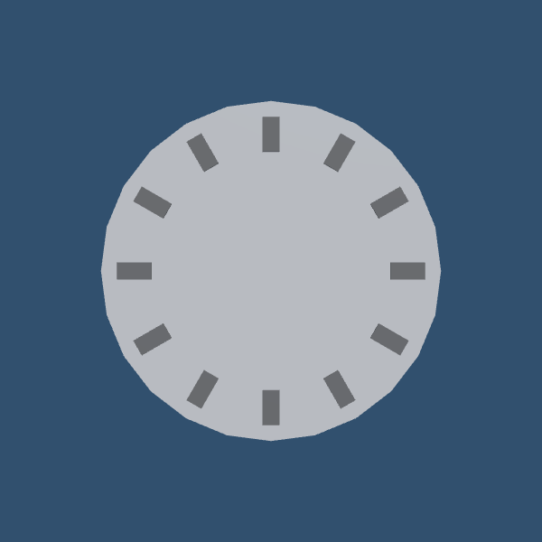

3.5 · Build a clock: objects, hierarchy, materials and your first script
Goal: a wall clock made only from primitives (one cylinder and fifteen cubes) whose three arms show the current time and glide smoothly. You practise the things every Unity project starts with: creating objects, the object hierarchy, transforms (position, rotation, scale), materials, a pivot to rotate around, and a script on a component.

This is the Nord version of the first exercise of Catlike Coding's Unity Basics series (Game Objects and Scripts by Jasper Flick, catlikecoding.com). The exercise and all its numbers are the same (scales, positions, rotations, hexadecimal colours); the words, the editor steps and the code are written for Nord, so you can follow both side by side.
Download: the finished project, also in examples/clock. Open nord.project.json in Nord and press Play. Allow 45 minutes to build it yourself.
Unity names in this page: a Unity GameObject is a Nord entity; Hierarchy, Inspector, Scene view, Game view, Project window (Nord: the Assets panel) and Console are the same panels. If you know Unity, you already know where everything is.
1 Create the project#
In the editor: start Nord, choose New project, name it clock, pick 3D and press Create. The project opens with an empty scene.
Terminal (in the folder where the project should be created), as an alternative to the editor:
nord new clock -t 3dA 3D project is Babylon.js plus (optionally) Havok physics. The clock has no physics, so open the Project tab ▸ Project properties and set Physics to none if the list offers it (leaving the default is harmless), Game size 600 × 600 (a square picture suits a round clock) and Background #31506e, then press Apply project properties.
In the file nord.project.json (open it in a text editor to check what the editor wrote):
"display": { "width": 600, "height": 600, "scale": "fit", "pixelArt": false, "background": "#31506e" },
"physics": { "engine": "none", "gravity": [0, 0, 0] }Differences from a new Unity project (and what you can ignore)#
| Unity | Nord |
|---|---|
| Packages: the template ships several, the exercise removes them | Nord has no package manager; nothing to remove |
| Color space: set to Linear | Nothing to set. Colours are written as #rrggbb and look the same as in the Unity exercise |
| Render pipeline choice (built-in, URP, HDR) | One 3D renderer (Babylon.js). Materials are physically based, like Unity's Standard shader |
| The sample scene has a Main Camera and a Directional Light | You create both yourself in section 4 |
| Scene view navigation: Alt + drag orbits, scroll zooms, F frames the selection | Identical: Alt + left-drag orbits, wheel zooms, F frames. Details: Unity-style workflow |
Axes. Nord's 3D world is the same as Unity's: X points right, Y up, Z forward (into the screen). Rotations are in degrees. We design the clock so its front is seen looking along Z.
2 Build the clock#
2.1 The empty object#
- Hierarchy ▸ + Create ▸ Empty. The new object is selected.
- Rename it
Clock(select it and press F2, or edit Name at the top of the Inspector). - Check its Transform: Position
0, 0, 0, Rotation0, 0, 0, Scale1, 1, 1.
The empty object has only a transform, so you see nothing in the scene, just its move gizmo. It will hold the whole clock: everything we add becomes its child, and a child follows the position, rotation and scale of its parent (the same as Unity). Move or scale Clock later and the clock moves or scales as one thing.
In the file scenes/main.scene.json, the object is stored like this (check it in a text editor):
{ "name": "Clock", "transform": { "pos": [0, 0, 0], "rot": [0, 0, 0], "scale": [1, 1, 1] }, "components": [], "children": [] }2.2 The face: a flattened cylinder#
Nord's quick-create menu has the Unity primitives: Cube, Sphere, Capsule, Cylinder, Plane and Quad.
- Hierarchy ▸ + Create ▸ Cylinder. Rename it
Face. It already has ameshcomponent with shapecylinderand size1, 2, 1(the Unity cylinder: 1 wide, 2 high). - Set the Transform: Rotation
90, 0, 0and Scale10, 0.2, 10. - Drag
FaceontoClockin the Hierarchy so it becomes a child (or right-clickClock▸ Create child and build the object there).
Why those numbers: the cylinder is 2 units high, so scale Y 0.2 makes it 0.4 thick, and scale X/Z 10 makes the clock 10 units wide. A cylinder stands up along Y; rotating it 90° around X lays its round side towards us, so the clock face looks along Z. The material stays white (the default).

In the file scenes/main.scene.json, inside the children of Clock:
{ "name": "Face", "transform": { "pos": [0, 0, 0], "rot": [90, 0, 0], "scale": [10, 0.2, 10] },
"components": [ { "type": "mesh", "shape": "cylinder", "size": [1, 2, 1], "castShadow": true },
{ "type": "material", "color": "#ffffff" } ] }No collider to remove. Unity adds a physics collider to every primitive, and the exercise deletes it. Nord's
meshis only a picture: there is nothing to remove.
2.3 The hour indicators: cubes#
- Hierarchy ▸ + Create ▸ Cube, rename it
Hour Indicator 12, drag it ontoClock. - Scale
0.5, 1, 0.1(a narrow, flat, long block). Position0, 4, −0.25: 4 units above the centre (towards the top of the face) and a quarter unit in front of it (−Z is towards the viewer). - We need twelve. Select it and press Hierarchy ▸ Duplicate (the copy icon, or Cmd/Ctrl+D) eleven times, rename and set each as in the table. The first two are quick checks:
- hour 6 is hour 12 with the Y position negated;
- hours 3 and 9 sit at X
4/−4, Y0, and are turned a quarter circle (Z rotation90).
| Hour | X | Y | Z | Rotation Z |
|---|---|---|---|---|
| 1 | 2 | 3.464 | −0.25 | −30 |
| 2 | 3.464 | 2 | −0.25 | −60 |
| 3 | 4 | 0 | −0.25 | 90 |
| 4 | 3.464 | −2 | −0.25 | 60 |
| 5 | 2 | −3.464 | −0.25 | 30 |
| 6 | 0 | −4 | −0.25 | 0 |
| 7 | −2 | −3.464 | −0.25 | −30 |
| 8 | −3.464 | −2 | −0.25 | −60 |
| 9 | −4 | 0 | −0.25 | 90 |
| 10 | −3.464 | 2 | −0.25 | 60 |
| 11 | −2 | 3.464 | −0.25 | 30 |
| 12 | 0 | 4 | −0.25 | 0 |
How to get the numbers yourself: an hour is 30° clockwise starting at the top. A block at distance 4 from the centre sits at X = 4·sin(30°·h), Y = 4·cos(30°·h): for hour 1, X = 2 and Y = 3.464. Each block must also turn so it points at the centre: clockwise by 30°·h. Unity's positive rotation around Z is counterclockwise as seen from the front. Nord's 3D world is built the same way (same axes, same degrees), so clockwise is negative: hour 1 is −30, hour 2 is −60. If an arm or block turns the other way on your screen, flip the sign. A block looks the same after a half turn, so hours 4 and 5 can use +60 and +30 instead of −120 and −150. Hours 7, 8, 10 and 11 follow by mirroring: negate X and the rotation of hours 5, 4, 2 and 1.
Trap: the grid of numbers does not have to be typed by hand. Duplicate hour 1 and edit it; the mirror trick above (negate Y and rotation, or X and rotation) gives you four hours from each of the first two.
In the file scenes/main.scene.json, one hour indicator inside the children of Clock (hour 1):
{ "name": "Hour Indicator 1", "transform": { "pos": [2, 3.464, -0.25], "rot": [0, 0, -30], "scale": [0.5, 1, 0.1] },
"components": [ { "type": "mesh", "shape": "box", "size": [1, 1, 1], "castShadow": true },
{ "type": "material", "color": "#ffffff" } ] }2.4 Materials: dark indicators, black arms, a red seconds arm#
A material decides how a surface looks. In Unity you create a Material asset; Nord does the same with a material file.
- Assets ▸ right-click ▸ New folder named
materials. (Keeping assets tidy is a Unity habit worth keeping.) - Inside it, Assets ▸ Create ▸ Material three times and name the files
hour-indicator,clock-armandseconds-arm. Select each and set its colour in the Inspector:
| Material | Colour (hex) | Used on |
|---|---|---|
hour-indicator |
#494949 (dark grey, 73 in RGB 0–255) |
the twelve hour indicators |
clock-arm |
#000000 (black) |
hours arm and minutes arm |
seconds-arm |
#B30000 (dark red) |
seconds arm |
The other material fields (metallic 0, roughness 0.5) stay as they are: that is Unity's default smoothness of 0.5. Albedo, a word you will see in Unity's colour field, is the colour of a surface in white light; Nord calls it colour.
- Give every indicator its material: select all twelve (click the first, Shift-click the last) and in the
materialcomponent set asset toassets/materials/hour-indicator.mat.json. (Dragging the material file from Assets onto an object in the Hierarchy does the same.)
The indicators are dark grey against the white face now.
In the file assets/materials/hour-indicator.mat.json:
{ "color": "#494949", "metallic": 0, "roughness": 0.5 }and an indicator entity uses it by pointing at the file, in scenes/main.scene.json:
{ "type": "material", "asset": "assets/materials/hour-indicator.mat.json" }2.5 The arms and their pivots#
Make the hours arm by duplicating Hour Indicator 12, renaming it Hours Arm and giving it the clock-arm material: Scale 0.3, 2.5, 0.1, Position 0, 0.75, −0.25. The arm reaches from 0.75 − 1.25 = −0.5 (a short tail behind the centre, like a counterweight) up to 2.
If you rotate this arm now, it turns around its own centre, not around the clock's centre. (Select it, press E for the Rotate tool and drag the Z ring to see.) That is why clocks need a pivot: an empty object at the clock's centre whose child is the arm. Rotate the pivot and the arm swings around the centre.
- Right-click
Clock▸ Create child, choose Empty, name itHours Arm Pivot. Position, rotation0, 0, 0, scale1, 1, 1. - Drag
Hours ArmontoHours Arm Pivot. - Select the pivot and rotate it: the arm circles the centre. In the Scene view make sure the tool handle mode is Pivot, not Center (the toolbar toggle), or the gizmo sits in the middle of the arm.
- Duplicate the pivot (with its arm) twice for the other arms and rename the pivots and their children
Minutes Arm Pivot/Minutes ArmandSeconds Arm Pivot/Seconds Arm.
| Object | Scale (x, y, z) | Position (x, y, z) | Material |
|---|---|---|---|
Hours Arm |
0.3, 2.5, 0.1 | 0, 0.75, −0.25 | clock-arm |
Minutes Arm |
0.2, 4, 0.1 | 0, 1, −0.35 | clock-arm |
Seconds Arm |
0.1, 5, 0.1 | 0, 1.25, −0.45 | seconds-arm |
| the three pivots | 1, 1, 1 | 0, 0, 0 | none (empty) |
The Z positions differ by 0.1 each so the arms sit in front of one another (the seconds arm on top) and never overlap in the same plane. Set the positions on the arms, not on the pivots.
In the file scenes/main.scene.json, a pivot with its arm (the hours arm), inside the children of Clock:
{ "name": "Hours Arm Pivot", "transform": { "pos": [0, 0, 0], "rot": [0, 0, 0], "scale": [1, 1, 1] }, "components": [],
"children": [
{ "name": "Hours Arm", "transform": { "pos": [0, 0.75, -0.25], "rot": [0, 0, 0], "scale": [0.3, 2.5, 0.1] },
"components": [ { "type": "mesh", "shape": "box", "size": [1, 1, 1], "castShadow": true },
{ "type": "material", "asset": "assets/materials/clock-arm.mat.json" } ] } ] }Save the scene with File ▸ Save all (Cmd+S).
3 A camera and a light#
The scene needs something to look through and something to light it.
- Hierarchy ▸ + Create ▸ Camera, rename it
Main Camera. Position0, 0, −14, Rotation0, 0, 0(it looks along +Z, straight at the clock). In itscameracomponent keep fov60. - Hierarchy ▸ + Create ▸ Directional light, keep intensity
1. Point it like Unity's default light (rotation 50, −30, 0). In Nord a directional light has a direction vector instead: set it to−0.321, −0.766, 0.557. - Project tab ▸ Quality and lighting: the same panel edits the open scene's ambient colour and intensity. Set the colour
#8a93a3and the intensity0.6so the face is not too dark on the shaded side.
In the file scenes/main.scene.json:
"settings": { "ambient": "#8a93a3", "ambientIntensity": 0.6 },
"entities": [
{ "name": "Main Camera", "transform": { "pos": [0, 0, -14], "rot": [0, 0, 0], "scale": [1, 1, 1] }, "components": [ { "type": "camera", "fov": 60 } ] },
{ "name": "Directional Light", "transform": { "pos": [0, 3, 0], "rot": [0, 0, 0], "scale": [1, 1, 1] },
"components": [ { "type": "light", "kind": "directional", "intensity": 1, "color": "#ffffff", "direction": [-0.321, -0.766, 0.557] } ] }
]Press Play: you see a white clock with dark indicators and three arms, all at twelve o'clock. The clock is built; it just does not know the time yet.
4 Make it tell the time: your first script#
4.1 Create the script#
Unity has C# scripts; Nord has JavaScript files that follow the same pattern.
- Assets ▸ New folder
scripts(it exists in a new project; use it). - Assets ▸ right-click ▸ New MonoBehaviour script (Unity-style), name it
Clock. The editor createsscripts/Clock.js. Double-click it to open it in the Code tab (or in your own editor). - Replace the whole file with the smallest possible component:
File: scripts/Clock.js (new file, the whole file: replace everything the editor generated)
import { MonoBehaviour } from 'nord';
export default class Clock extends MonoBehaviour {
}| Unity (C#) | Nord (JavaScript) |
|---|---|
using UnityEngine; |
import { MonoBehaviour } from 'nord'; |
public class Clock : MonoBehaviour {} |
export default class Clock extends MonoBehaviour {} |
a file ending in .cs |
a file ending in .js |
MonoBehaviour is the base type of every script that can be added to an object as a component. You inherit its data and functions and add your own. export default makes the class the one thing this file offers to the engine.
- Select
Clockin the Hierarchy and Inspector ▸ + Add script ▸ scripts/Clock.js (or drag the file onto the object).
In the file scenes/main.scene.json, the Clock entity now lists the script:
"scripts": [ { "path": "scripts/Clock.js", "attributes": {} } ]4.2 Fields that connect to other objects#
The script must know the three pivots. In C# you write [SerializeField] Transform hoursPivot;, and Unity shows a slot in the Inspector where you drag the pivot. In Nord an Inspector field of type entity holds the name of an object (you type or pick the name):
File: scripts/Clock.js (replace the whole file from the last step)
import { MonoBehaviour, SerializeField, EntityRef } from 'nord';
export default class Clock extends MonoBehaviour {
// Inspector fields. Each one holds the NAME of an object in the scene; the Inspector shows a picker for it.
static attributes = SerializeField({
hoursPivot: EntityRef('Hours Arm Pivot'),
minutesPivot: EntityRef('Minutes Arm Pivot'),
secondsPivot: EntityRef('Seconds Arm Pivot'),
});
}static attributes = SerializeField({ … })is the list of Inspector fields (the[SerializeField]attribute).EntityRef('Hours Arm Pivot')declares a field of type entity with a default name. It is how you give a script access to another object: this field is the equivalent of theTransform hoursPivotslot.- Separate fields keep the code readable; the C# shortcut of declaring three with one type has no JavaScript counterpart.
Save the file. Select Clock in the Hierarchy: the Inspector now shows the fields hoursPivot, minutesPivot and secondsPivot, already filled with the default names. If you named your pivots differently, put the right names in the fields.
In the file scenes/main.scene.json, the script entry now carries the values you picked:
"scripts": [ { "path": "scripts/Clock.js", "attributes": {
"hoursPivot": "Hours Arm Pivot", "minutesPivot": "Minutes Arm Pivot", "secondsPivot": "Seconds Arm Pivot" } } ]Why a name and not a direct link? Unity serialises a reference to the object itself. Nord saves the object's name and your script looks it up with
Findwhen the game starts. Keep the names unique.
4.3 Wake up and rotate once#
Unity runs Awake when a component wakes, and Start just before the first frame. In Nord the same two exist, with one rule that matters here: Awake runs while the scene is still being created, so other objects may not exist yet. Look things up in Start.
File: scripts/Clock.js (replace the whole file from the last step)
import { MonoBehaviour, SerializeField, EntityRef, Quaternion } from 'nord';
export default class Clock extends MonoBehaviour {
static attributes = SerializeField({
hoursPivot: EntityRef('Hours Arm Pivot'),
minutesPivot: EntityRef('Minutes Arm Pivot'),
secondsPivot: EntityRef('Seconds Arm Pivot'),
});
Start() {
this.hours = this.Find(this.hoursPivot); // the field is a name, Find turns it into the object
this.hours.transform.localRotation = Quaternion.Euler(0, 0, -30); // always one o'clock for now
}
}this.Find('Name')isGameObject.Find("Name"): it returns the object (an entity)..transformis the object's Transform, the thing the Unity code callshoursPivot..localRotationis its rotation relative to its parent.Quaternion.Euler(0, 0, -30)makes a rotation from angles in degrees: 0 around X, 0 around Y and −30 around Z, which is 30° clockwise seen from the front. Hour 1 is 30° clockwise from twelve.
Press Play: the hours arm points to one o'clock. Exit play mode before continuing: the Scene returns to its saved state, so changes you make in play mode do not stay (assets do).
Why
Quaternion, not three numbers? Unity code sets rotations with quaternions; you can think of one as a rotation that avoids a problem called gimbal lock.Quaternion.Euler(x, y, z)converts friendly angles to one. In Nord,transform.eulerAngles = new Vector3(0, 0, -30)works too.
Trap: wrong direction? If your arm turns anticlockwise, you set +30. In the Inspector a rotation of Z
−30is clockwise as seen from the camera.
4.4 Read the time, set all three arms#
Unity reads DateTime.Now; JavaScript has new Date(). Hours, minutes and seconds come from getHours(), getMinutes(), getSeconds(). The conversion factors are always the same, so they become constants (C# const; in JavaScript a module-level const): an hour is −30°, a minute and a second are −6° (360° / 60).
File: scripts/Clock.js (replace the whole file from the last step)
import { MonoBehaviour, SerializeField, EntityRef, Quaternion } from 'nord';
const hoursToDegrees = -30, minutesToDegrees = -6, secondsToDegrees = -6; // C# const: values that never change
export default class Clock extends MonoBehaviour {
static attributes = SerializeField({
hoursPivot: EntityRef('Hours Arm Pivot'),
minutesPivot: EntityRef('Minutes Arm Pivot'),
secondsPivot: EntityRef('Seconds Arm Pivot'),
});
Start() {
this.hours = this.Find(this.hoursPivot);
this.minutes = this.Find(this.minutesPivot);
this.seconds = this.Find(this.secondsPivot);
const time = new Date(); // read the clock once: C# DateTime.Now
this.hours.transform.localRotation = Quaternion.Euler(0, 0, hoursToDegrees * time.getHours());
this.minutes.transform.localRotation = Quaternion.Euler(0, 0, minutesToDegrees * time.getMinutes());
this.seconds.transform.localRotation = Quaternion.Euler(0, 0, secondsToDegrees * time.getSeconds());
}
}Read the clock once into time (the C# var time = DateTime.Now) and use it three times; reading it again for every arm could give three slightly different times.
Press Play: the arms show the time of the moment you pressed Play, and then stay still.
4.5 Animate with Update#
Rename the rotating part to Update. Unity calls Update once for every frame: it updates everything, renders the scene, shows the result, and starts again. Finding the pivots only once stays in Start:
File: scripts/Clock.js (replace the whole file from the last step)
import { MonoBehaviour, SerializeField, EntityRef, Quaternion } from 'nord';
const hoursToDegrees = -30, minutesToDegrees = -6, secondsToDegrees = -6;
export default class Clock extends MonoBehaviour {
static attributes = SerializeField({
hoursPivot: EntityRef('Hours Arm Pivot'),
minutesPivot: EntityRef('Minutes Arm Pivot'),
secondsPivot: EntityRef('Seconds Arm Pivot'),
});
Start() {
this.hours = this.Find(this.hoursPivot);
this.minutes = this.Find(this.minutesPivot);
this.seconds = this.Find(this.secondsPivot);
}
Update() { // every frame, so the arms follow the time
const time = new Date();
this.hours.transform.localRotation = Quaternion.Euler(0, 0, hoursToDegrees * time.getHours());
this.minutes.transform.localRotation = Quaternion.Euler(0, 0, minutesToDegrees * time.getMinutes());
this.seconds.transform.localRotation = Quaternion.Euler(0, 0, secondsToDegrees * time.getSeconds());
}
}Press Play: the seconds arm now jumps once per second and the others follow. Select Clock in the Hierarchy while playing: the little checkbox in front of the script's name in the Inspector disables it (the arms freeze), the way a Unity component's toggle stops its Update.
4.6 Smooth, analog motion#
Right now the clock behaves like a digital clock with arms: each arm sits exactly on a whole hour, minute or second. A real analog clock moves all the time. We need the fractional time: seconds since midnight including the milliseconds (C# gets it from TimeOfDay.TotalSeconds). From it, hours = seconds / 3600 and minutes = seconds / 60:
File: scripts/Clock.js (the final file: replace the whole file from the last step)
import { MonoBehaviour, SerializeField, EntityRef, Quaternion } from 'nord';
const hoursToDegrees = -30, minutesToDegrees = -6, secondsToDegrees = -6;
export default class Clock extends MonoBehaviour {
static attributes = SerializeField({
hoursPivot: EntityRef('Hours Arm Pivot'),
minutesPivot: EntityRef('Minutes Arm Pivot'),
secondsPivot: EntityRef('Seconds Arm Pivot'),
});
Start() {
this.hours = this.Find(this.hoursPivot);
this.minutes = this.Find(this.minutesPivot);
this.seconds = this.Find(this.secondsPivot);
}
Update() {
const now = new Date();
// like TimeOfDay.TotalSeconds: seconds since midnight, with the fraction, so the arms glide instead of ticking
const totalSeconds = now.getHours() * 3600 + now.getMinutes() * 60 + now.getSeconds() + now.getMilliseconds() / 1000;
this.hours.transform.localRotation = Quaternion.Euler(0, 0, hoursToDegrees * (totalSeconds / 3600));
this.minutes.transform.localRotation = Quaternion.Euler(0, 0, minutesToDegrees * (totalSeconds / 60));
this.seconds.transform.localRotation = Quaternion.Euler(0, 0, secondsToDegrees * totalSeconds);
}
}Press Play: a real analog clock. The hours arm creeps, the minutes arm glides, the seconds arm sweeps.
No casting needed. The C# exercise has to convert
doubletofloat. JavaScript has one number type, so there is no cast and nofsuffix.
5 Optional: let the editor build the hour indicators for you#
Typing twelve positions is a good way to learn transforms, and a bad way to spend an afternoon when you want a 24-hour dial. Unity solves this with editor scripts and buttons in the Inspector. Nord has the same idea: a script can declare an Inspector button, and pressing it runs a static method of the script, in the editor, on the object that has the script. The method edits a copy of that object (for example adds children) and the editor applies the result as one undo step.
5.1 The script#
- Assets ▸ right-click ▸ New MonoBehaviour script (Unity-style), name it
HourIndicators, open it and replace everything with:
File: scripts/HourIndicators.js (new file, the whole file; attach it to the Clock object, not to the face)
import { MonoBehaviour, SerializeField, Header, Tooltip, Button } from 'nord';
/** Optional helper for the clock: builds the twelve hour indicators for you. It does nothing while the game runs; it works in the editor. */
export default class HourIndicators extends MonoBehaviour {
static attributes = SerializeField({
radius: Header('Layout', Tooltip('Distance of every indicator from the centre of the clock', 4)),
depth: Tooltip('Z position: negative is in front of the face', -0.25),
indicatorSize: [0.5, 1, 0.1],
material: { type: 'asset', assetType: 'material', default: 'assets/materials/hour-indicator.mat.json' },
generate: Button('Generate hour indicators', 'GenerateHourIndicators'),
});
/** Runs in the editor when you press the button in the Inspector. `ctx.entity` is the object that has this script (the clock). */
static GenerateHourIndicators(ctx) {
for (const old of ctx.FindAll((e) => /^Hour Indicator \d+$/.test(e.name))) ctx.Destroy(old); // regenerate cleanly
const { radius, depth, indicatorSize, material } = ctx.attrs;
for (let hour = 1; hour <= 12; hour++) {
const angle = (hour * 30 * Math.PI) / 180; // each hour is 30 degrees, clockwise from the top
ctx.CreateChild({
name: `Hour Indicator ${hour}`,
pos: [radius * Math.sin(angle), radius * Math.cos(angle), depth],
rot: [0, 0, -hour * 30], // clockwise is negative, like the manual version
scale: indicatorSize,
components: [
{ type: 'mesh', shape: 'box', size: [1, 1, 1], castShadow: true },
{ type: 'material', asset: material },
],
});
}
ctx.log('Created 12 hour indicators');
}
}- Put it on the
Clockobject (not onFace).Faceis scaled10, 0.2, 10and turned 90°, and children inherit their parent's scale and rotation, so indicators created under the face would be squashed and turned. Created underClockthey have exactly the numbers of the manual version.
When you select Clock, the Inspector shows a section Layout with Radius, Depth, Indicator size, Material and a button Generate hour indicators. Delete the twelve indicators you made by hand, press the button, and they appear again; press it twice and you still get twelve (the script removes the old ones first). Edit ▸ Undo takes the whole batch back.
In the file scenes/main.scene.json, the script entry of Clock holds only values (a button is not a value, so it is not stored):
{ "path": "scripts/HourIndicators.js", "attributes": {
"radius": 4, "depth": -0.25, "indicatorSize": [0.5, 1, 0.1], "material": "assets/materials/hour-indicator.mat.json" } }5.2 How it works#
| In the script | Unity equivalent | What it does |
|---|---|---|
Button('Generate hour indicators', 'GenerateHourIndicators') |
a button in a custom editor, or [ContextMenu] |
a button in the Inspector that calls the static method with that name |
static GenerateHourIndicators(ctx) { … } |
an Editor script method |
runs in the editor, not in the game |
ctx.entity |
target of the editor |
a copy of the object that has the script, as scene data |
ctx.attrs |
the serialized fields | the current values of the Inspector fields (radius, depth, …) |
ctx.CreateChild({ name, pos, rot, scale, components }) |
new GameObject + SetParent |
adds a child; pass ctx.CreateChild(data, parent) for a deeper level |
ctx.FindAll(test), ctx.Find(name) |
transform.Find |
look through the object's children |
ctx.Destroy(child) |
DestroyImmediate |
removes a child |
ctx.log(text) |
Debug.Log |
writes to the Console |
The component list you pass to CreateChild is the same data the Inspector writes ({ "type": "mesh", "shape": "box", … }), so anything you can build by hand you can generate. Errors show in the Console as [script button] ….
Trap: the method must be
static. An ordinary method (GenerateHourIndicators() {}) belongs to a script instance, and in the editor no instance exists, because the game is not running. If the button does nothing, check the Console forhas no static method.
5.3 More Inspector options, like Unity's attributes#
The same SerializeField({ … }) list can shape the Inspector. These helpers are written inside static attributes; the editor reads them without running any code.
| Unity | Nord (inside SerializeField) |
Effect |
|---|---|---|
[Header("Layout")] |
radius: Header('Layout', 4) or { default: 4, header: 'Layout' } |
a bold heading above the field |
[Tooltip("…")] |
Tooltip('Text', 4) or { default: 4, tooltip: 'Text' } |
text when you hover the field name |
[Space(10)] |
Space(10, 4) or { default: 4, space: 10 } |
extra space above the field |
[Range(0, 10)] |
Range(0, 10, 5) |
a slider |
[TextArea] |
TextArea('hello') or { default: 'hello', multiline: true } |
a multi-line text box |
| read-only field | ReadOnly(5) or { default: 5, readonly: true } |
shown, greyed out |
[HideInInspector] |
HideInInspector(5) or { default: 5, hidden: true } |
kept and saved, not shown |
| an enum | Enum(['idle', 'chase'], 'idle') |
a drop-down |
| a reference to another object | EntityRef('Name') |
a picker of the scene's objects (holds the name) |
| a button | Button('Label', 'method') |
the button of this section |
Helpers combine: Header('Layout', Tooltip('Distance from the centre', Range(0, 10, 4))).
6 What you learned (and the traps)#
| Unity idea | Where you used it in Nord |
|---|---|
| GameObject, empty object | Clock, the three pivots |
| Primitives (Cylinder, Cube) | Face (mesh shape cylinder), indicators and arms (box) |
| Transform: position, rotation, scale | the tables above; a child follows its parent |
| Hierarchy: parent and child | everything under Clock; arms under pivots |
| Material and colour (albedo) | three .mat.json files, hex #494949, #000000, #B30000 |
| Pivot object | rotating around the clock's centre instead of the arm's own centre |
| Component and script | Clock.js added with + Add script |
| Editor scripts and Inspector buttons | HourIndicators.js with Button(...) and a static method |
[SerializeField] |
static attributes = SerializeField({ … }) |
Awake / Start / Update |
look up objects in Start, move the arms in Update |
Quaternion.Euler, localRotation |
the arm rotations |
DateTime.Now, TimeOfDay |
new Date() and total seconds |
Check yourself
- In play mode the arms show the time of your computer's clock and the seconds arm moves smoothly.
- The seconds arm is red and in front; the hours arm is the shortest; each arm has a short tail behind the centre.
- Rotating
Hours Arm Pivotby hand in the Scene view swings the arm around the centre. - If you get a red error in the Console that says
Cannot read properties of nullor similar, a pivot name in the script fields does not match an object. Check the spelling in the Inspector. - If the clock face looks black, check the camera is at
0, 0, −14and the directional light exists.
Next: Finding objects and talking to scripts (page 3) goes deeper into Find and GetComponent, and GameManager and Singletons (page 4) is the next building block. Back to Examples.